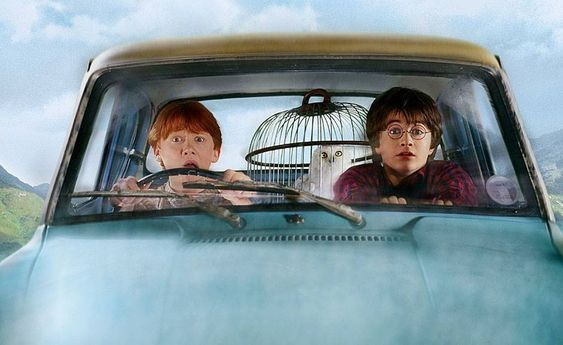

| Data De Lançamento | Diretor | Duração |
|---|---|---|
| 22 de novembro de 2002 (Brasil) | Chris Columbus | 2h 41m |
A história acompanha Harry Potter em seu segundo ano na Escola de Magia e Bruxaria de Hogwarts. Ao retornar para a escola, Harry começa a ouvir uma voz misteriosa pelos corredores e descobre que a lendária Câmara Secreta foi aberta, colocando os alunos em perigo. Criaturas começam a atacar estudantes, deixando-os petrificados, e Harry, junto com Ron Weasley e Hermione Granger, decide investigar o mistério. O filme mistura fantasia, aventura e mistério, mostrando Harry e seus amigos enfrentando novos perigos enquanto tentam descobrir quem abriu a Câmara Secreta e impedir que novos ataques aconteçam.
| Personagem | Ator/Atriz | Idade Atual |
|---|---|---|
| Harry Potter | Daniel Radicliffe | 37 anos |
| Rony Weasley | Rupert Grint | 38 anos |
| Hermione Granger | Emma Watson | 36 anos |
| Ginny Weasley | Bonnie Wright | 35 anos |
| Tom Riddle | Chistian Coulson | 48 anos |
| Dobby | Toby Jones (voz) | 60 anos |
| Draco Malfoy | Tom Felton | 38 anos |
| Rubeos Hagrid | Robbie Coltrane | *72 anos |
| Gilderoy Lockhart | Kenneth Branagh | 65 anos |
| Lucius Malfoy | Jason Isaacs | 63 anos |
Adoro como esse filme consegue manter a atmosfera de descoberta do primeiro enquanto introduz um lado muito mais sombrio de Hogwarts. A possibilidade de existir uma câmara secreta dentro do castelo, os ataques misteriosos e as suspeitas sobre Harry tornam a história extremamente envolvente.
Dobby é um dos destaques, trazendo humor, afeto e uma história de liberdade que se torna ainda mais importante quando conhecemos os livros. A introdução do diário de Tom Riddle também é brilhante, porque apresenta um objeto aparentemente inofensivo que esconde um dos maiores perigos da saga. A sequência na Floresta Proibida, a presença das aranhas, o Basilisco e o confronto na Câmara são momentos muito bem construídos. Além disso, Kenneth Branagh como Gilderoy Lockhart proporciona um humor maravilhoso sem apagar o mistério central. Como leitora, sinto falta de alguns detalhes que tornam a trama ainda mais interessante. A investigação sobre a Câmara Secreta é mais prolongada no livro, e a suspeita de que Harry seja o herdeiro de Sonserina ganha muito mais espaço. Isso ajuda a mostrar como o preconceito e o medo podem transformar alguém em alvo de desconfiança. A briga entre Arthur Weasley e Lúcio Malfoy na Floreios e Borrões é reduzida, assim como a festa do aniversário de morte de Nick Quase Sem Cabeça. A história de Gina também poderia ter sido desenvolvida com mais cuidado, porque o livro constrói melhor os sinais de que ela está sendo manipulada pelo diário. Ainda assim, considero a adaptação muito competente. Ela preserva o coração do mistério e entrega uma aventura que consegue ser divertida e assustadora ao mesmo tempo.
Minha conclusão: um filme muito subestimado. Ele aprofunda o universo mágico, apresenta informações fundamentais sobre Voldemort e mantém aquela sensação de que Hogwarts esconde segredos em cada corredor.